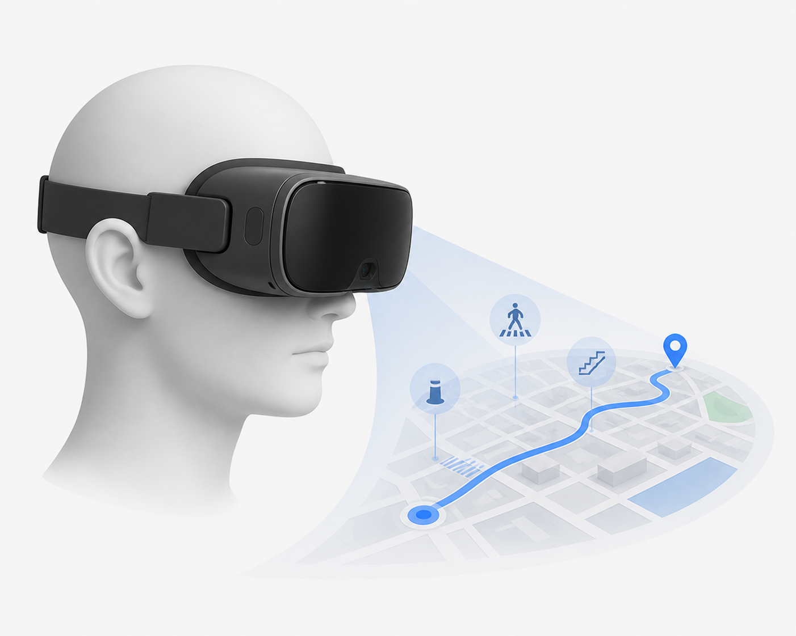
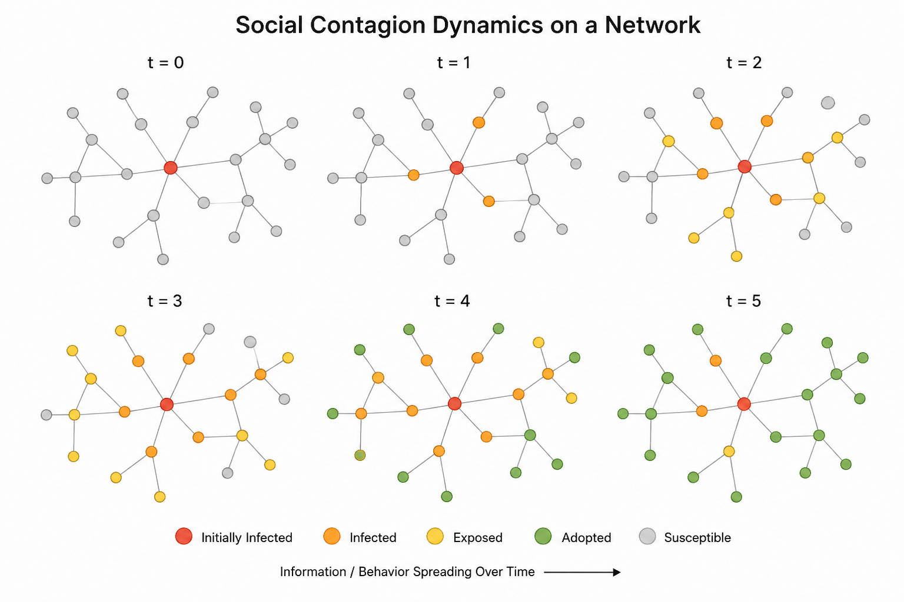
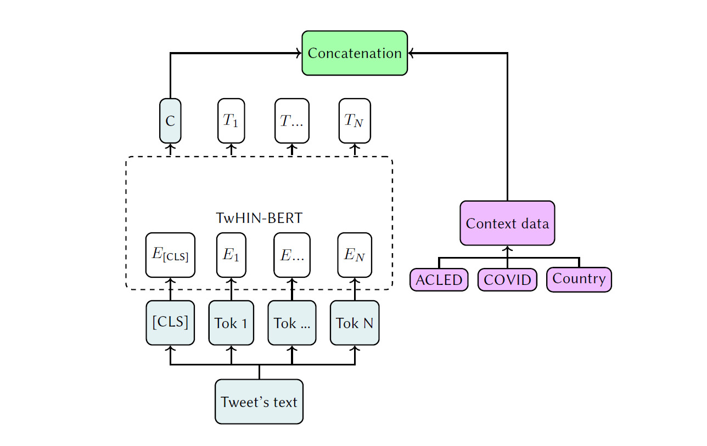
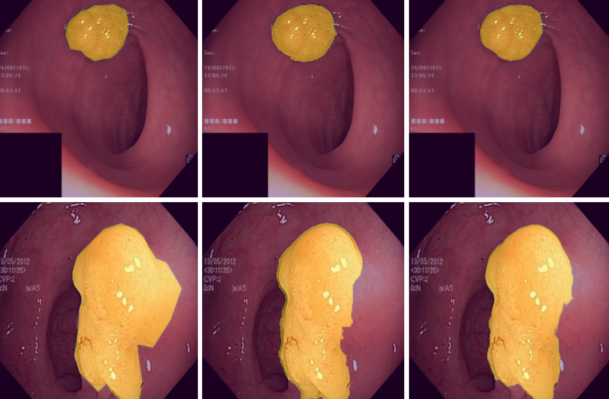
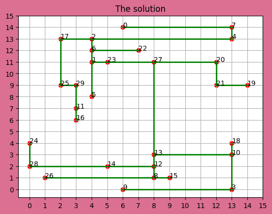

Research & Projects
Selected
work

Spotter: Feature-Based Urban Visual Localization
A lightweight visual localization system for urban environments that estimates full 6-DoF camera pose from a single street-level image. Query images are matched against a compact, precomputed database of geo-referenced SuperPoint features extracted from Google Street View panoramas. An OSM road-graph-aware candidate filtering strategy and sequential prior propagation enable robust operation with and without GPS at 15–30 FPS. A patent application and RAL submission are in preparation.

SmartGaze II: VO-GPS Fusion for Real-Time Urban Navigation on Smart Glasses
Visual-Inertial Odometry fused with GNSS correction for precise real-time urban localization and assistive navigation on wearable devices. Developed for the SMARTGAZE II project to enhance mobility for people with low vision, running on Biel Glasses hardware with on-device inference constraints.

Urban Risk-Aware Navigation via VQA-Based Event Maps for People with Low Vision
A VQA-based framework for assistive urban navigation using a three-level hierarchical query structure to detect pedestrian hazards across eight safety categories. Model responses are aggregated into georeferenced risk event maps with four safety levels for route planning. We benchmark ViLT, LLaVA, InstructBLIP, and Qwen-VL on a dataset spanning 20 cities across six continents (800+ annotated images, 18k questions) — Qwen-VL achieves the best balance of precision and recall (F1: 0.69, accuracy: 0.77).

Exploring the Influence of Graph Neural Network-Based Link Prediction on Social Contagion Dynamics
Systematically analyzes how four GNN-based link prediction models (GCN, GAT, SEAL, Graph Transformer) reshape social network structures and their downstream effect on information diffusion. Evaluated across six diverse datasets using both simple and complex epidemic contagion frameworks. Results show LP consistently introduces structural shortcuts targeting hub nodes, accelerating diffusion in denser networks — attention-based models promote broader propagation while GCNs form localized clusters. Complex Path Centrality and node degree emerge as key predictors of contagion susceptibility.

Geopolitically-Informed Multimodal BERT for Propaganda Detection in Political Tweets
Submission to DIPROMATS Task 1 at IberLEF 2024, targeting propaganda detection in diplomatic tweets in English and Spanish. Proposes a multimodal BERT-like model combining a pre-trained TwHIN-BERT encoder with geopolitical contextual features to capture the intentions behind propaganda use and mitigate spurious correlations and concept drift. Achieves competitive results in both language tracks with stronger performance in Spanish. Adding contextual features consistently improves F1 on the propaganda class, motivating further research in geopolitically-informed NLP.

UNet-Based Model Analysis for Polyp Segmentation in Colonoscopy Images
Comparative analysis of UNet variants (UNet++, ResUNet, Attention-UNet) for medical image segmentation of colorectal polyps. Evaluates architectural choices, augmentation strategies, and loss functions on standard colonoscopy benchmark datasets.

SAT Solver for the Yashi Puzzle Game
Encodes the Yashi grid-connection puzzle as a Boolean satisfiability problem and solves it using a custom SAT solver. Translates game rules — non-crossing horizontal/vertical segments connecting numbered nodes — into CNF clauses for efficient constraint-based reasoning.